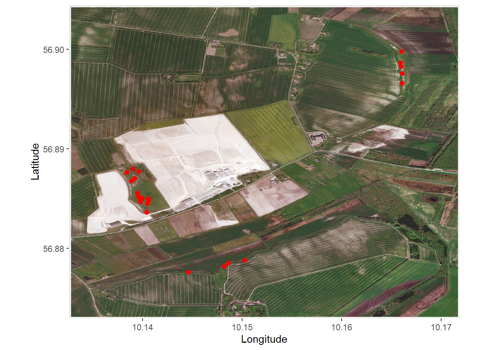
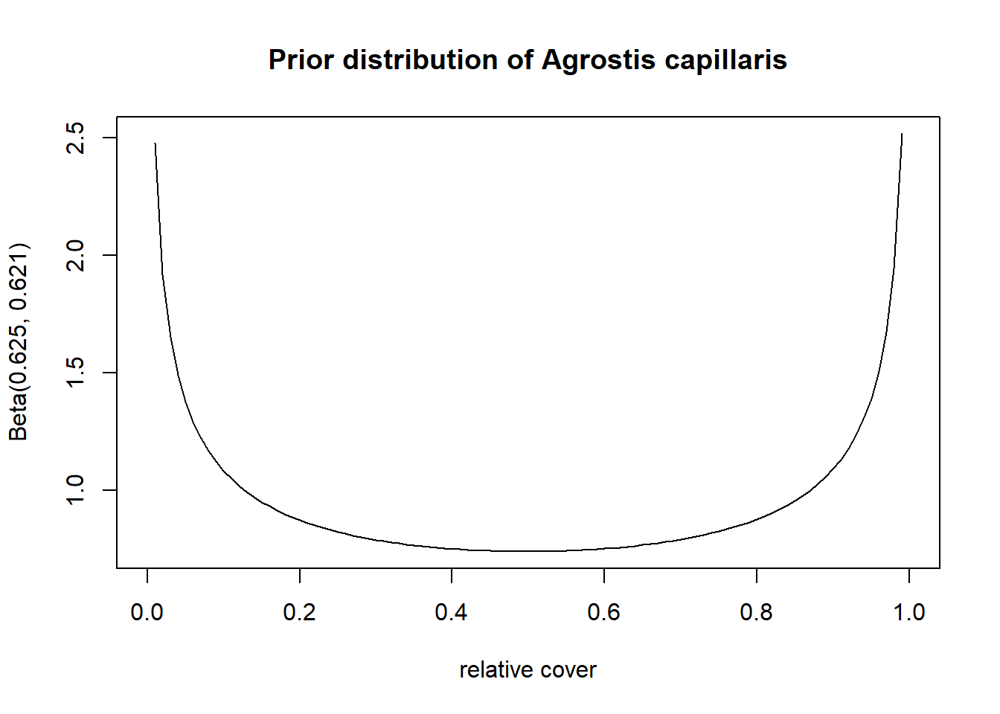

A bayesian method for better plant diverity estimates
Last updated: 2021-05-09
Checks: 6 1
Knit directory: DataProject - ny/
This reproducible R Markdown analysis was created with workflowr (version 1.6.2). The Checks tab describes the reproducibility checks that were applied when the results were created. The Past versions tab lists the development history.
The R Markdown file has unstaged changes. To know which version of the R Markdown file created these results, you’ll want to first commit it to the Git repo. If you’re still working on the analysis, you can ignore this warning. When you’re finished, you can run wflow_publish to commit the R Markdown file and build the HTML.
Great job! The global environment was empty. Objects defined in the global environment can affect the analysis in your R Markdown file in unknown ways. For reproduciblity it’s best to always run the code in an empty environment.
The command set.seed(20210322) was run prior to running the code in the R Markdown file. Setting a seed ensures that any results that rely on randomness, e.g. subsampling or permutations, are reproducible.
Great job! Recording the operating system, R version, and package versions is critical for reproducibility.
Nice! There were no cached chunks for this analysis, so you can be confident that you successfully produced the results during this run.
Great job! Using relative paths to the files within your workflowr project makes it easier to run your code on other machines.
Great! You are using Git for version control. Tracking code development and connecting the code version to the results is critical for reproducibility.
The results in this page were generated with repository version b9ca680. See the Past versions tab to see a history of the changes made to the R Markdown and HTML files.
Note that you need to be careful to ensure that all relevant files for the analysis have been committed to Git prior to generating the results (you can use wflow_publish or wflow_git_commit). workflowr only checks the R Markdown file, but you know if there are other scripts or data files that it depends on. Below is the status of the Git repository when the results were generated:
Ignored files:
Ignored: .Rproj.user/
Unstaged changes:
Modified: analysis/index.Rmd
Note that any generated files, e.g. HTML, png, CSS, etc., are not included in this status report because it is ok for generated content to have uncommitted changes.
These are the previous versions of the repository in which changes were made to the R Markdown (analysis/index.Rmd) and HTML (docs/index.html) files. If you’ve configured a remote Git repository (see ?wflow_git_remote), click on the hyperlinks in the table below to view the files as they were in that past version.
| File | Version | Author | Date | Message |
|---|---|---|---|---|
| Rmd | b9ca680 | MHPHP | 2021-05-09 | docs files |
| html | b9ca680 | MHPHP | 2021-05-09 | docs files |
| Rmd | 31595ee | GitHub | 2021-04-29 | Add files via upload |
| html | f124bf6 | GitHub | 2021-04-28 | Add files via upload |
| html | a067bee | GitHub | 2021-04-28 | Add files via upload |
| Rmd | bb6ab85 | MHPHP | 2021-04-21 | Commited index again and changes in model_validering of the assumptions |
| html | bb6ab85 | MHPHP | 2021-04-21 | Commited index again and changes in model_validering of the assumptions |
| Rmd | 33269f8 | MHPHP | 2021-04-21 | Index changes, and functions changes. |
| html | 33269f8 | MHPHP | 2021-04-21 | Index changes, and functions changes. |
| html | 524999a | GitHub | 2021-04-18 | Add files via upload |
| Rmd | bc87b52 | GitHub | 2021-04-18 | Add files via upload |
| Rmd | 6c0e88a | GitHub | 2021-04-15 | Add files via upload |
| html | 1bfbb02 | GitHub | 2021-04-14 | Add files via upload |
| html | f173714 | GitHub | 2021-04-14 | Add files via upload |
| Rmd | 13425ec | GitHub | 2021-04-14 | Merge branch ‘master’ into Nikolaj |
| html | 13425ec | GitHub | 2021-04-14 | Merge branch ‘master’ into Nikolaj |
| Rmd | 7a3c9bd | nbendsen | 2021-04-14 | add stuff |
| html | 7a3c9bd | nbendsen | 2021-04-14 | add stuff |
| Rmd | 29e6e6f | MHPHP | 2021-04-14 | Added docs for functions |
| html | 29e6e6f | MHPHP | 2021-04-14 | Added docs for functions |
| html | 2e33a66 | MHPHP | 2021-04-07 | Build site. |
| Rmd | 059ac58 | MHPHP | 2021-04-07 | wflow_publish(all = TRUE) |
| html | 51449f1 | MHPHP | 2021-04-07 | Build site. |
| Rmd | 32f0ec7 | MHPHP | 2021-04-07 | wflow_publish(all = TRUE) |
| html | e5eedea | nbendsen | 2021-03-31 | Build site. |
| html | c434a8c | nbendsen | 2021-03-31 | Build site. |
| Rmd | 568a3c5 | nbendsen | 2021-03-31 | wflow_publish(c(“analysis/index.rmd”)) |
| Rmd | 713e7fb | GitHub | 2021-03-31 | Merge branch ‘master’ into master |
| html | 713e7fb | GitHub | 2021-03-31 | Merge branch ‘master’ into master |
| html | 1caf04d | MHPHP | 2021-03-30 | Build site. |
| Rmd | a2dddd6 | MHPHP | 2021-03-30 | wflow_publish(all = TRUE) |
| html | a2dddd6 | MHPHP | 2021-03-30 | wflow_publish(all = TRUE) |
| html | d945760 | nbendsen | 2021-03-30 | Build site. |
| Rmd | b8765a5 | nbendsen | 2021-03-30 | wflow_publish(c(“analysis/index.rmd”, “analysis/function_shannon.rmd”)) |
| html | 96ffa9e | nbendsen | 2021-03-25 | Build site. |
| Rmd | a90c239 | nbendsen | 2021-03-25 | wflow_publish(c(“analysis/index.rmd”)) |
| html | f3968f6 | MHPHP | 2021-03-25 | Build site. |
| Rmd | 2d04d26 | MHPHP | 2021-03-25 | wflow_publish(“analysis/index.Rmd”) |
| html | 475c26b | nbendsen | 2021-03-24 | Build site. |
| Rmd | 47a03be | nbendsen | 2021-03-24 | wflow_publish(c(“analysis/index.rmd”)) |
| html | 9ed2be6 | nbendsen | 2021-03-24 | Build site. |
| Rmd | d7b7e47 | nbendsen | 2021-03-24 | wflow_publish(c(“analysis/index.rmd”)) |
| html | a719931 | nbendsen | 2021-03-24 | Build site. |
| Rmd | 8ec6fcf | nbendsen | 2021-03-24 | wflow_publish(c(“analysis/index.rmd”)) |
| html | 7743879 | nbendsen | 2021-03-24 | Build site. |
| Rmd | 7762b80 | nbendsen | 2021-03-24 | wflow_publish(c(“analysis/index.rmd”)) |
| html | 35cf564 | nbendsen | 2021-03-24 | Build site. |
| Rmd | c1edf4a | nbendsen | 2021-03-24 | wflow_publish(c(“analysis/index.rmd”)) |
| html | 97bf5d5 | nbendsen | 2021-03-24 | Build site. |
| Rmd | 103a237 | nbendsen | 2021-03-24 | wflow_publish(c(“analysis/index.rmd”)) |
| html | 3967bb2 | nbendsen | 2021-03-24 | Build site. |
| Rmd | 1bc1c06 | nbendsen | 2021-03-24 | wflow_publish(c(“analysis/index.rmd”)) |
| html | 7fcbf35 | nbendsen | 2021-03-24 | Build site. |
| Rmd | e6d7258 | nbendsen | 2021-03-24 | wflow_publish(all = TRUE) |
| Rmd | fed4b63 | bendsen | 2021-03-22 | Start workflowr project. |
Introduction
Many methods for estimating the species diversity within an area have been proposed in the literature, and which ones are used depends on the data available. For example, a common diversity measure is “Species richness” that is a count of the number of species present in a given location – irrespective of whether a species is common or rare. To include information on the abundance of individual species in the diversity measure, the Shannon index is a frequently used estimate, which account not only for the presence of a species but also its abundance (measured either as number of individuals or for plants often as cover, i.e. how much of the ground area is covered by a given species).
While the latter measure (Shannon) often will give a better estimate of the diversity in a location, it requires available data of not only presence of a species but also of its abundance. In reality, such data are collected as samples of smaller areas meant to represent a larger location. In smaller areas, the abundance of each species present may be well sampled, but rarely do smaller areas contain all species present in the location. In this vignette, we will propose a new method with this goal to combine cover (abundance) data often collected in smaller samples, with presence/absence data that are often collected over larger areas but lack the information of individual speceis’ abundance. We will be working with a subset of the Danish national survey NOVANA dataset as examples to show how this new method can be applied. Further informations about the the NOVANA can be found at https://novana.au.dk/.
The NOVANA datasets consist of information from different “sites” across Denmark. Each site is an area with some tertiary habitat. Below we have plotted all the sites with tertiary habitat “kalkoverdrev” from the year of 2009 that were included in the NOVANA dataset.

Within each site a number of “plots” are placed. It is data from these plots that we will be studying in this vignette. Below we zoom in on a single site. The red dots is intended to visualize the plots in this specific site

Each plot consists of presence/absence data, cover data and a dataset including other metrics of the plot such as pH value of the soil in the plot. A plot is given by a circle with a radius of 5 meters. For each species included in the NOVANA dataset the presence/absence data for a plot keeps information on whether the species is found within the circle or not. This is indicated by a binary variable with found = 1.
In the center of the circle is a square with side length of 0.5 meters. Within this square the cover of each present species is projected down on the surface. A number of pins are placed uniformly onto the projection. The cover data for each species is then the proportion of pins each it is hit by. Thus, the cover data is a sample of the 2 dimensional projection of each species down on the surface. In the NOVANA dataset 16 pins are placed uniformly within the square.
This is called the pinpoint-method and is an estimate of the abundance of a species in the plot. However, this is only a small sample of the entire plot. As mentioned earlier this pinpoint-method may estimate the abundance of species within the square well, but it is unlikely that each species present in the plot is also present in the square.
As the presence/absence data and cover data are at the center of this vignette we have made the following simple illustration to highlight the characteristics of the two data types described above.

Each colour represent a single species, thus, we have a purple, brown, red, green and yellow species. Following the drawing we get the following cover and presence/absence data for each species
| Presence/absence data | Cover data | |
|---|---|---|
| Brown species | 0 | 0 |
| Purple species | 1 | 0 |
| Red species | 1 | 16 |
| Yellow species | 1 | 1 |
| Green species | 1 | 9 |
It is possible for multiple species to overlap and for a pin to hit more than one species. We have indicated this by the red species overlapping the green and yellow species. In the example the red species is hit by all 16 pins. Again we note that we can have the information that a species is present in the plot, but that we don’t have any estimate of its cover within the plot as it is not present within the small square. This is shown with the purple species in this case. Below is a bit larger example of what cover and presence/absence datasets could look like. These datasets will later be used as mini examples to show how the method we create works
| Species 1 | Species 2 | Species 3 | Species 4 | Species 5 | Species 6 | Species 7 | Species 8 | Species 9 | |
|---|---|---|---|---|---|---|---|---|---|
| Plot1 | 2 | 0 | 0 | 1 | 0 | 3 | 0 | 0 | 2 |
| Plot2 | 0 | 0 | 0 | 0 | 0 | 0 | 0 | 0 | 0 |
| Plot3 | 5 | 0 | 1 | 10 | 0 | 11 | 7 | 16 | 0 |
| Plot4 | 0 | 2 | 1 | 9 | 3 | 0 | 4 | 9 | 1 |
| Plot5 | 1 | 0 | 16 | 0 | 0 | 14 | 0 | 0 | 11 |
| Plot6 | 0 | 1 | 0 | 0 | 0 | 1 | 1 | 0 | 0 |
| Plot7 | 16 | 10 | 2 | 7 | 0 | 13 | 0 | 9 | 5 |
| Species 1 | Species 2 | Species 3 | Species 4 | Species 5 | Species 6 | Species 7 | Species 8 | Species 9 | |
|---|---|---|---|---|---|---|---|---|---|
| Plot1 | 1 | 1 | 0 | 1 | 0 | 1 | 1 | 0 | 1 |
| Plot2 | 0 | 1 | 0 | 0 | 0 | 0 | 0 | 0 | 0 |
| Plot3 | 1 | 0 | 1 | 1 | 0 | 1 | 1 | 1 | 0 |
| Plot4 | 0 | 1 | 1 | 1 | 1 | 0 | 1 | 1 | 1 |
| Plot5 | 1 | 0 | 1 | 0 | 0 | 1 | 0 | 0 | 1 |
| Plot6 | 0 | 1 | 0 | 0 | 0 | 1 | 1 | 0 | 0 |
| Plot7 | 1 | 1 | 1 | 1 | 1 | 1 | 0 | 1 | 1 |
The essence of this vignette is to come up with a method to combine the two datatypes; cover data and presence/absence. Both types of data include important information of the plots that we would like to use.
Theoretical discussion
As mentioned in the introduction, plant diversity is often calculated by species richness using presence/absence data or Shannon index using abundance data where cover data is an example of one type of abundance data.However, when we only use either the presence/absence data or the cover data we loose valuable information from the dataset that we do not used. A further factor we want to take into account is that fact that species are not randomly distributed inside a plot or site, but rather species grows in some spatial pattern.In the following we propose a method that for each plot obtain an estimate of a species’ abundance in the entire plot where we combine both presence/absence data and cover data for the species and take the spatial distribution of the species into account. The assumption is that this should also lead to better diversity estimates of the plots in the dataset. We will do this by applying a bayesian framework and use a beta-binomial model.
From the general setup in bayesian statistics we get that \[ P(\theta|Y=y) \propto P(Y=y|\theta)\cdot \pi(\theta) \] where \(P(Y=y|\theta)\) is the likelihood function and \(\pi(\theta)\) is some prior distribution. We are interested in the posterior distribution \(P(\theta|Y=y)\) which we can use to estimate the abundance of a species in the entire plot.
In the cover data each specie is hit by \(y\) pins out of \(n\) possible in each plot. A natural distribution to model this is the binomial distribution \[ P(Y = y| \theta) = {n \choose y}\theta^y(1-\theta)^{n-y} \]
We use the binomial model as the likelihood function for each species in each plot. We can create a prior distribution \(\pi(\theta)\) of the spatial distribution for each species by using information from both the cover and presence/absence data. This is really the key idea in this beta binomial method. By using the bayesian framework and including a prior distribution of a species’ spatial distribution we assume that we will be able to obtain a better abundance estimate of species abundance in a plot where we know the species is present from the presence/absence data for the plot.
The beta model is a conjugate prior for the binomial model and, thus, is ideal to use. The beta-distribution is given by \[ \pi(\theta) = \text{beta}(\alpha, \beta) = \frac{\Gamma (\alpha+\beta)}{\Gamma (\alpha) \Gamma(\beta)}\theta^{\alpha -1}(1-\theta)^{\beta-1} \] When working with the bayesian framework, one has to decide on the paramters \(\alpha\) and \(\beta\). However, this can be difficult and instead we apply the empirical bayes method: For each species we fit a beta-prior using all the cover data from the same tertiary habitat type where the corresponding presence/absence data is \(1\). We use all cover data from the same tertiary habitat as we assume that a species follows the same spatial distribution within a tertiary habitat.
From the likelihood function and the prior distribution we get that the posterior distribution will be an updated beta distribution for each species in each plot \[ P(\theta | Y = y) \sim Beta(\alpha + y, \beta + n-y) \] When the posterior distribution is found for a species in a given plot, we use the mean posterior as an estimate of the abundance for the species in the plot.
The mean posterior for a beta-distribution is given by: \[ E\Big(P(\theta|Y =y)\Big) = \frac{\alpha + y}{\alpha + y+\beta + n-y} \] From the above theoretical discussion we get a new dataset with updated abundances for each species in each plot. The next step for users of this method will be, as an example, to apply some diversity measures for the plots using the new updated dataset. Some of commonly used diversity measures are described in link and will be used in the examples below.
Implementation
The above theoretical discussions of the beta-binomial model are implemented in the function “beta_binomial_cover_update”.
Usage:
beta_binomial_cover_update(cover_data, presence_absence_data, n = 16 , remove_column = 0)
Arguments:
- Cover_data: Data frame with plots as rows and species as columns. Each cell in the data frame contains cover data for a given specie in a given plot.
- presence_absence_data: Data frame with plots as rows and species as columns. Each cell in the data frame contains a 1 if the specie is present in the plot or a 0 if the specie is absent in the plot.
- n: An integer. A number each cell in the cover data gets divided by if the cover data is not in the interval \([0,1]\). In the NOVANA dataset n = 16 secures this property. If the cover data is already on the interval \([0,1]\), one can just let n = 1.
- remove_column: An integer. In case the first columns in the cover_data and presence_absence_data contain data not about the species but rather information on the plots, these columns have to be removed. The numbers of columns to be removed must be the same in the cover_data and presence/absence_data. The removed columns will be included again in the output. In the NOVANA dataset the first columns are “site”, “plot”, year" so remove_column = 3 when this datasat is applied.
Output
- The function returns a dataframe, similar to the cover data, but now containing new abundance data calculated using the method descripted above.
Calculated example
To illustrate how to use this function we use the mini examples of cover data and presence/absence data that we presented in the introduction| Species 1 | Species 2 | Species 3 | Species 4 | Species 5 | Species 6 | Species 7 | Species 8 | Species 9 | |
|---|---|---|---|---|---|---|---|---|---|
| Plot1 | 2 | 0 | 0 | 1 | 0 | 3 | 0 | 0 | 2 |
| Plot2 | 0 | 0 | 0 | 0 | 0 | 0 | 0 | 0 | 0 |
| Plot3 | 5 | 0 | 1 | 10 | 0 | 11 | 7 | 16 | 0 |
| Plot4 | 0 | 2 | 1 | 9 | 3 | 0 | 4 | 9 | 1 |
| Plot5 | 1 | 0 | 16 | 0 | 0 | 14 | 0 | 0 | 11 |
| Plot6 | 0 | 1 | 0 | 0 | 0 | 1 | 1 | 0 | 0 |
| Plot7 | 16 | 10 | 2 | 7 | 0 | 13 | 0 | 9 | 5 |
| Species 1 | Species 2 | Species 3 | Species 4 | Species 5 | Species 6 | Species 7 | Species 8 | Species 9 | |
|---|---|---|---|---|---|---|---|---|---|
| Plot1 | 1 | 1 | 0 | 1 | 0 | 1 | 1 | 0 | 1 |
| Plot2 | 0 | 1 | 0 | 0 | 0 | 0 | 0 | 0 | 0 |
| Plot3 | 1 | 0 | 1 | 1 | 0 | 1 | 1 | 1 | 0 |
| Plot4 | 0 | 1 | 1 | 1 | 1 | 0 | 1 | 1 | 1 |
| Plot5 | 1 | 0 | 1 | 0 | 0 | 1 | 0 | 0 | 1 |
| Plot6 | 0 | 1 | 0 | 0 | 0 | 1 | 1 | 0 | 0 |
| Plot7 | 1 | 1 | 1 | 1 | 1 | 1 | 0 | 1 | 1 |
We input the two datasets into our function
| Species 1 | Species 2 | Species 3 | Species 4 | Species 5 | Species 6 | Species 7 | Species 8 | Species 9 | |
|---|---|---|---|---|---|---|---|---|---|
| Plot1 | 2.165401 | 0.2155853 | 0.000000 | 2.178135 | 0.000000 | 3.385214 | 0.6237624 | 0.000000 | 2.374 |
| Plot2 | 0.000000 | 0.2155853 | 0.000000 | 0.000000 | 0.000000 | 0.000000 | 0.0000000 | 0.000000 | 0.000 |
| Plot3 | 5.041350 | 0.0000000 | 1.087547 | 9.334098 | 0.000000 | 10.814527 | 6.1683168 | 15.093525 | 0.000 |
| Plot4 | 0.000000 | 2.0497504 | 1.087547 | 8.538991 | 2.472973 | 0.000000 | 3.7920792 | 9.453237 | 1.510 |
| Plot5 | 1.206751 | 0.0000000 | 15.759245 | 0.000000 | 0.000000 | 13.600519 | 0.0000000 | 0.000000 | 10.150 |
| Plot6 | 0.000000 | 1.1326678 | 0.000000 | 0.000000 | 0.000000 | 1.527886 | 1.4158416 | 0.000000 | 0.000 |
| Plot7 | 15.586498 | 9.3864112 | 2.065660 | 6.948777 | 0.527027 | 12.671855 | 0.0000000 | 9.453237 | 4.966 |
First example
In the this first example we only work with a subset of the NOVANA data including the tertiary habitat “surt overdrev” (in the NOVANA dataset this is encoded as terhabtype = 6230). Furthermore, we only look at year 2014. Click on this link for further details on how this subset was created.
cover <- read.csv("data/cover_data_6230_year2014.csv")
freq <- read.csv("data/frekvens_data_6230_year2014.csv")
abiotiske <- read.csv("data/abiotiske_data_6230_year2014.csv")We apply the method function to the cover and freq datasets and obtain a dataset with updated abundace values for each species in each plot. In the following we will refer to this as the beta binomial cover data.
beta_binomial_cover <- beta_binomial_cover_update(cover, freq, n = 16, 3)Species level
The following plot is included as an example of a prior distribution used in the beta binomial update method. The plot is the prior distribution for the species “Agrostis capillaris”
curve(dbeta(x,a,b), xlab = "relative cover", main = "Prior distribution of Agrostis capillaris", ylab = sprintf("Beta(%.3f, %.3f)", a, b)) The above plot was built as follows: for each plot where the species “Agrostis capillaris” had a \(1\) in the presence/absence data we saved the number of pins the species had in the cover data and divided these by 16 to get the relative cover. We then fitted a beta distribution to these numbers and thereby obtained the plot.
It is seen that there it high probability of being either around 0 or around 1. This is not only for this species but a common prior distribution for many species. This is because a lot of species are grouped in a way, such that if they are present, they will cover a lot of the area, or else they are not present at all.
Hill Diversity comparison
In this section we will use the Hill diversity that is described in Diversity to compare the beta binomial cover data with the observed cover data. This will highlight how using our method will change the result depending on how much emphasize rare species are given when calculating the diversity for a plot. Hill diversity is given as
\[
\text{Hill diversity = }\left( \sum_{i=1}^{S} p_i (r_i)^{l}\right)^{1/l}
\] where the \(l\) exponent determines how much weight rare species is given. For high \(l\) values the Hill diversity is more sensitive to rare species. For \(l = -1\) we have the Hill Simpson diversity, for \(l = 0\) we have the Hill Shannon diversity and for \(l = 1\) we have the species richness. In the below we look at some plots in the dataset. We see how the diversity of the plot changes as a function of the exponent \(l\). We do this for the plot in the observed cover dataset (red line) and for the same plot in the beta binomial cover data (blue line). This can help to give a feeling for which aspects of the the plot the beta binomial cover update method has changed.
For plot 1
different_diversities(cover, beta_binomial_cover, plot = 1, remove_column = 3) For plot 100
For plot 100
different_diversities(cover, beta_binomial_cover, plot = 100, remove_column = 3) It should be noted that in practive we would not calculate the species richness for a plot with the observed cover data but rather with the presence/absence data. If we did calculate the species richness from the observed cover data, we would only get the species richness of the small square in the center of the plot and not of the entire plot. In the above plot we want to show how the observed cover data and the beta binomial cover updated data compare. Therefore, we have calculated the species richness from the observed cover data (species richness is \(l\) = 1). Of this reason, one should probably be careful and not interpret too much on the diversity estimates for large values of \(l\) for the observed cover data as these diversity estimates are not comparable with the ones we get from the beta binomial cover updated data.
It should be noted that in practive we would not calculate the species richness for a plot with the observed cover data but rather with the presence/absence data. If we did calculate the species richness from the observed cover data, we would only get the species richness of the small square in the center of the plot and not of the entire plot. In the above plot we want to show how the observed cover data and the beta binomial cover updated data compare. Therefore, we have calculated the species richness from the observed cover data (species richness is \(l\) = 1). Of this reason, one should probably be careful and not interpret too much on the diversity estimates for large values of \(l\) for the observed cover data as these diversity estimates are not comparable with the ones we get from the beta binomial cover updated data.
When we apply the beta binomial cover update method all species observed in the presence/absence data of the plot will get added a small value in the beta binomial cover updated data even though they have a \(0\) in the observed cover data. When we add this small abundance to species that did not have any observed abundance in the observed cover data we get a higher diversity estimate as expected.
In both the observed cover data and the beta binomial cover data the diversity estimates increase as \(l\) increases. However, the diversity estimate for the beta binomial cover data increases at a much more rapid pace. This can be contributed to the fact that as \(l\) increases the diversity estimate gets more sensitive towards rare species.
All the species that had a \(0\) in the observed cover data will have a small abundance value in the beta binomial cover data implying that these species are rare in this dataset. Thus, the beta binomial data will have a lot more rare species than the observed cover data and it, therefore, makes very good sense that as \(l\) increases, the difference in diversity estimates from the beta binomial cover data and the observed cover data increases.
Instead of only looking at a single plot at a time, we plot the average curve for all plots. The shaded area around the curve visualize the standard deviation at any point along the curve. We do it for all plots in the observed cover data and all the plots in the beta binomial cover data.

Many of the same comments as before also apply to this plot. We note the standard deviation stays roughly the same and only gets bigger for values of \(l\) close to 1. However, as stated earlier we would not use cover data to estimate species richness but presence/absence data so we are not too worried about the increased deviation in this part of the plot.
Different diversity estimates compared
This subsection is intended to further study what the effect of the beta binomial cover update function is on the data. For a number of different diversity measures we will plot the diversity measure obtained from the beta binomial cover data against the diversity measure obtained from the observed cover data. This is meant to further visualize the effect of the proposed method.
All the used diversity estimates are defined at link. When the Shannon index, Hill Shannon and Hill Simpson are calculated using the beta binomial cover dataset they will be refered to as “beta binomial Shannon index”, “beta binomial Hill Shannon” and “beta binomial Hill Simpson” respectivly.
Below we have calculated the shannon index for each plot in both the observed cover dataset and in the beta binomial cover updated dataset and plotted these against each other
observed_shannon <- shannon(cover, 3)beta_binomial_shannon <- shannon(beta_binomial_cover, 3)
It can be seen in this example that the beta binomial Shannon indexes give a slightly higher value for all plots. Noticeably are the biggest difference among plots with a low Shannon index.
We make a similar plot with the Hill Shannon diversity.
observed_hill_shannon <- hill_shannon(cover, 3)beta_binomial_hill_shannon <- hill_shannon(beta_binomial_cover, 3)
Here can it be seen that the difference seems to be largest with the higher value of the hill shannon.
Another method to estimate species diversity is to use the Hill Simpson diversity. We create a similar plot as above
observed_hill_simpson <- hill_simpson(cover, 3)beta_binomial_simpson <- hill_simpson(beta_binomial_cover, 3)The difference between the beta binomial Hill Simpson diversity and the Hill Simpson diversity obtained from the observed cover data is less than than for the Hill Simpson as expected. This fits nicely with what we found in the “Hill Diversity comparison” subsection. It is worth to notice that we in this plot get some diversity estimates that are lower in the beta binomial cover data than in the observed cover data.
Species diversity and pH value
One of the reasons you might want to calculate the diversity for a plot/site, is that you want to compare how different variables affect the diversity of the site. An example of this could be that you want to see how the pH value of the soil are related to the diversity of the plot.
Below we plot the beta binomial Shannon index and the observed Shannon index against the pH value of the soil. This is intended to visualize partly if there seems to be any interesting relationship between Shannon index and pH value of the soil and also whether the use of the beta binomial cover update function changes this conclusion.

There does not seem to be any clear relationship between the Shannon index and the pH value. As we also saw in the “Different diversity estimates compared” subsection, the plots with low observed Shannon index get a slightly higher Shannon index when this is calculated from beta binomial cover updated data.
We study the relationship between species diversity and pH value of the soil a bit further. The function plot_index_gradient is used to visualize how different ways of calculating diversities compare against each other when mapped against the pH values of the soil.
plot_diversity(data_for_plot ,c("Species richness", "Beta binomial Hill Shannon", "Beta binomial Hill Simpson"), "pH", description = "The PH value of the soil for each plot")The general trend that can be seen for all three diversities, beta binomial hill shannon, beta binomial hill simpson and spices richness, is that a low pH value is correlated with lower diversity up until a certain point. further analysis will be need to understand whether or not this is a casual relationship.
Second example
In the second example we look at the tertiary habitat “kalkoverdrev” (in the NOVANA dataset this is encoded as terhabtype = 6210) from year 2009.
cover_6210 <- read.csv("data/cover_data_6210_year2009.csv")
freq_6210 <- read.csv("data/frekvens_data_6210_year2009.csv")
abiotiske_6210 <- read.csv("data/abiotiske_data_6210_year2009.csv")With this data we are especially interested in how the diversity change when plotted against different values of nitrogen deposition. It is assumed that if the value of nitrogen deposition is high, there is a lot of nitrogen in the soil. It is also known that increased nitrogen supply can cause changes to the species composition.
Therefore, some illustrations of the relationship between nitrogen deposition and diversity measures can be used as another example of where the beta binomial cover update function can be used.
We apply our function to the data.
beta_binomial_cover <- beta_binomial_cover_update(cover_6210, freq_6210, n = 16, remove_column = 3)Again we refer to this new dataset as the beta binomial cover data.
Again we start with the Shannon index as this is so often used to estimate species diversity. We plot the observed Shannon index and the beta binomial Shannon index against the nitrogen deposition.
observed_shannon <- shannon(cover_6210, 3)ggplot(df, aes(x = N, y = diversity))+
geom_point()+
ylab("Shannon index")+
xlab("Nitrogen deposition")+
geom_smooth(method = "lm", se = FALSE) +
facet_wrap(~Type)+theme_minimal()`geom_smooth()` using formula 'y ~ x'As it can be seen here is there not a big difference between the two plots. It should however be noticed that the beta binomial shannon index is slightly higher for all values of nitrogen deposition. It might also be important for an analysis that fewer plots have a shannon index at 0 for the beta binomial model. Both plots show a slight downwards trend indicating that higher nitrogen deposition might lead to lower diversity.
The plots below illustrate how some other diversity measures applied to the beta binomial cover data looks like when mapped against the nitrogen deposition


ggplot(data_for_plot, mapping = aes(x = N, y = `Beta binomial Hill Simpson`))+
geom_point() +
ylab("Beta binomial Hill Simpson") +
xlab("Nitrogen deposition") +
ggtitle("Beta binomial Hill Simpson against nitrogen deposition")There does not seem to be a clear relation between the nitrogen deposition and the diversity for any of the diversity measures.
Sites
So far have we just been comparing different plots from the same habitat type against each other. since each plot is just a sample of a larger site, could it be useful to compare how different sites compare using both the beta binomial cover data and the observed cover data. Since taking averages from an diversity index as the shannon index is problematic as explained in diversity, will we use the hill diversity to compare across different sites.
We will first plot how beta binomial hill shannon compares with the observed hill shannon, where we for each site has taken the average value for all plots.
This looks quite similar to what we found when we compared at plot level.
An other comparison we can make, is to look at how the variance changes from the observed hill shannon, to the beta binomial hill shannon.
From the plot can it be seen that the beta binomial hill shannon has a higher variance an average, and that the variance grows larger with the diversity. This might be expected, as the beta binomial Hill-Shannon has a higher diversity and we might therefore suspect that the variance will also be larger.
sessionInfo()R version 4.0.3 (2020-10-10)
Platform: x86_64-w64-mingw32/x64 (64-bit)
Running under: Windows 10 x64 (build 19042)
Matrix products: default
locale:
[1] LC_COLLATE=English_United Kingdom.1252
[2] LC_CTYPE=English_United Kingdom.1252
[3] LC_MONETARY=English_United Kingdom.1252
[4] LC_NUMERIC=C
[5] LC_TIME=English_United Kingdom.1252
attached base packages:
[1] grid stats graphics grDevices utils datasets methods
[8] base
other attached packages:
[1] fitdistrplus_1.1-3 survival_3.2-7 png_0.1-7
[4] sp_1.4-4 maps_3.3.0 MASS_7.3-53
[7] magick_2.7.1 OpenStreetMap_0.3.4 kableExtra_1.3.4
[10] forcats_0.5.0 stringr_1.4.0 dplyr_1.0.2
[13] purrr_0.3.4 readr_1.4.0 tidyr_1.1.2
[16] tibble_3.0.4 ggplot2_3.3.2 tidyverse_1.3.0
loaded via a namespace (and not attached):
[1] httr_1.4.2 splines_4.0.3 jsonlite_1.7.1 viridisLite_0.3.0
[5] modelr_0.1.8 assertthat_0.2.1 highr_0.8 blob_1.2.1
[9] cellranger_1.1.0 yaml_2.2.1 pillar_1.4.6 backports_1.1.10
[13] lattice_0.20-41 glue_1.4.2 digest_0.6.25 promises_1.1.1
[17] rvest_0.3.6 colorspace_1.4-1 Matrix_1.2-18 htmltools_0.5.0
[21] httpuv_1.5.5 pkgconfig_2.0.3 broom_0.7.2 raster_3.4-5
[25] haven_2.3.1 scales_1.1.1 webshot_0.5.2 svglite_2.0.0
[29] whisker_0.4 later_1.1.0.1 git2r_0.28.0 mgcv_1.8-33
[33] generics_0.0.2 farver_2.0.3 ellipsis_0.3.1 withr_2.3.0
[37] cli_2.1.0 magrittr_1.5 crayon_1.3.4 readxl_1.3.1
[41] evaluate_0.14 fs_1.5.0 fansi_0.4.1 nlme_3.1-149
[45] xml2_1.3.2 tools_4.0.3 hms_0.5.3 lifecycle_0.2.0
[49] munsell_0.5.0 reprex_0.3.0 compiler_4.0.3 systemfonts_1.0.1
[53] rlang_0.4.8 rstudioapi_0.11 labeling_0.4.2 rmarkdown_2.4
[57] gtable_0.3.0 codetools_0.2-16 DBI_1.1.0 R6_2.4.1
[61] lubridate_1.7.9 knitr_1.30 rgdal_1.5-23 workflowr_1.6.2
[65] rprojroot_1.3-2 rJava_0.9-13 stringi_1.5.3 Rcpp_1.0.5
[69] vctrs_0.3.4 mapproj_1.2.7 dbplyr_1.4.4 tidyselect_1.1.0
[73] xfun_0.18